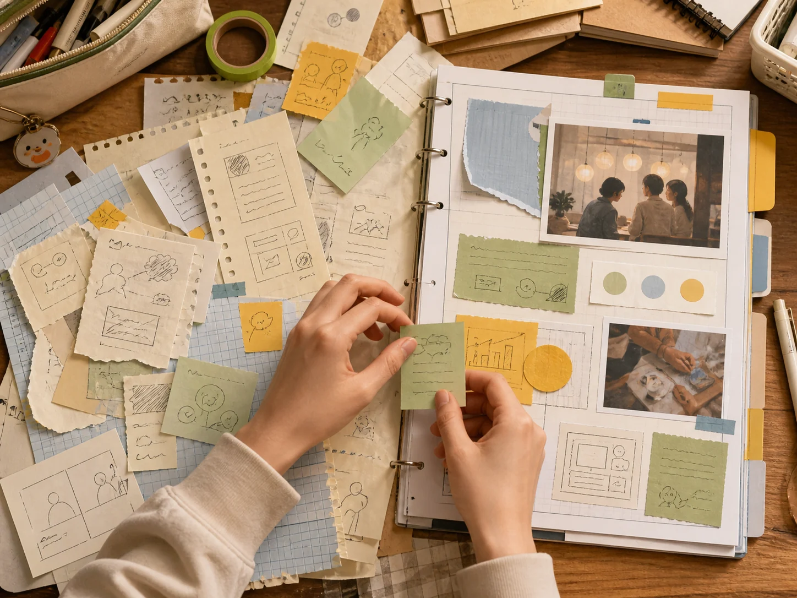
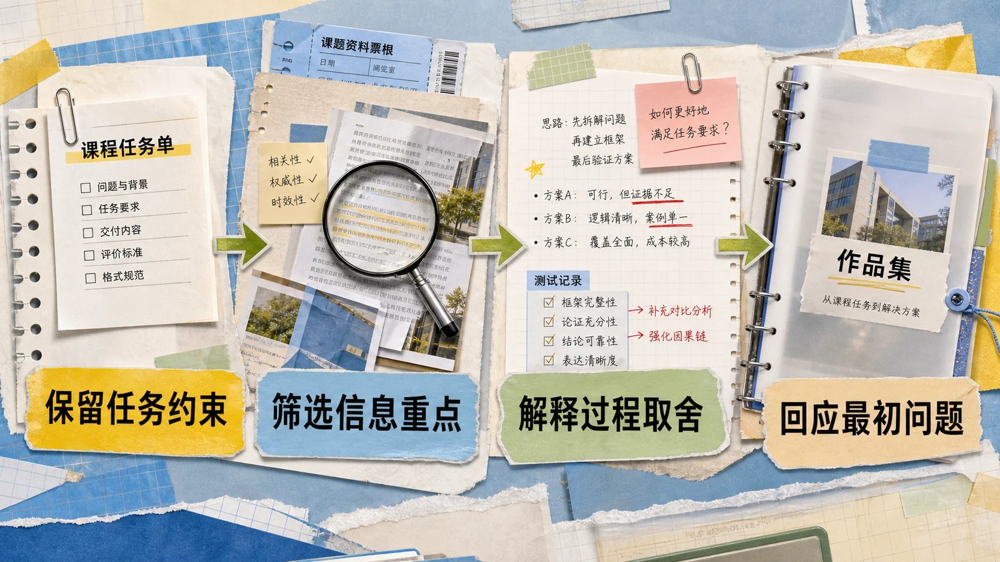
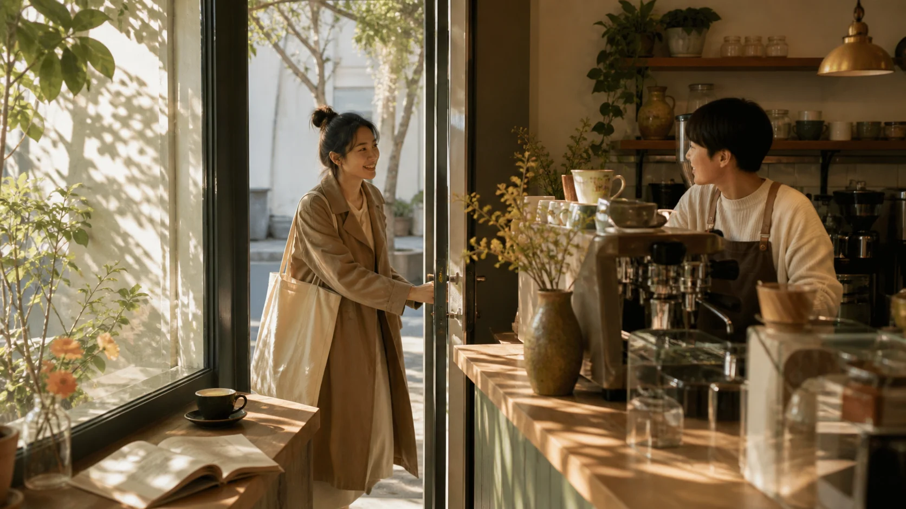
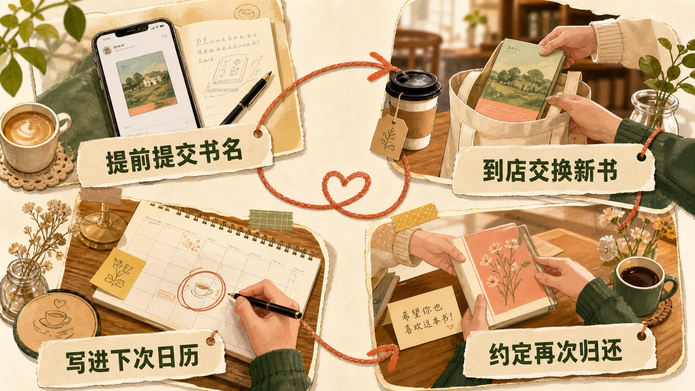
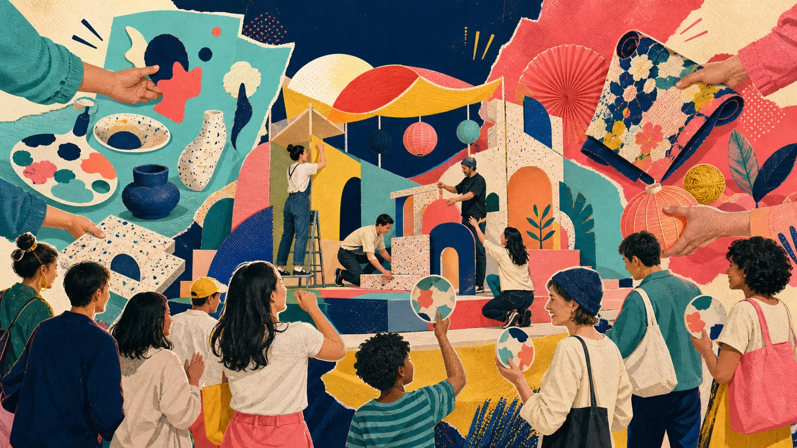

9:41•••
AI AGENT SKILL · OPEN-SOURCE · LOCAL-FIRST
不是给 Markdown
换一件衣服。
而是先理解文章，再决定视觉节奏。
一套面向公众号运营的视觉主编 Skill：宿主 Agent 理解内容，本地核心守住结构与事实，运营在工作台确认主题、配图和封面，最后写入微信公众号草稿箱。
点击后复制完整安装提示词，再粘贴到任意 Agent 对话中。
- 12
- 完整视觉主题
- 12
- 语义组件类型
- 390px
- 微信内容预览
内容结构 → 视觉意图 → 确定性渲染
9:41•••

正文不改写 · 主题可切换 · 图片需确认
REAL ARTICLE SHOWCASE / 03
三种内容，不用同一种模板硬套。
以下案例由当前版本的结构规划器、主题系统和微信渲染器生成。配图来自本轮 OpenAI 图像生成，并作为人工候选插入文章。
CASE 01 · CAMPUS PROJECT
别让课程作业
停在文件夹里
教程步骤类内容选择「青春校园」：活页纸、课程票根与手作拼贴形成行动感，四步改造路径被识别为结构信息图。
- 主题：青春校园
- 信息关系：四步路径
- 配图：结构信息图 + 场景插画

CASE 02 · LOCAL BUSINESS
社区咖啡店
如何让客人再来
本地商业观点内容选择「温暖人文」：真实生活场景承接情绪，闭环路径解释一次活动如何留下下一次到店的理由。
- 主题：温暖人文
- 信息关系：复访闭环
- 配图：真实场景 + 关系路径


CASE 03 · BRAND COLLABORATION
联名很热闹
品牌却没被记住
品牌观点内容选择「波普海报」：撞色切块、错位套印与撕纸拼贴承接联名话题的传播感，四种主题专属组件把概念、误区和行动路径组织成一篇完整文章。
- 主题：波普海报
- 信息关系：记忆三层 + 上新核对
- 配图：波普拼贴 + 共同体验场景

ARTICLE-LEVEL VISUAL DNA
图片不是散装生成，
而是共享一份美术方向。
文章决定画什么、解释什么关系；主题系统决定色板、画材、表面语言和构图气质。正文插图与封面共享同一份 Visual DNA，生成后仍由运营人工确认。
01 / STRUCTURE
结构信息图
把步骤、对比和关系变成可扫读的画面，不把整段正文塞进图片。
02 / ATMOSPHERE
场景氛围图
用环境、人物动作和光线承接情绪，让图片服务叙事而不是只做装饰。
03 / METAPHOR
视觉隐喻图
用主题专属画材表达抽象观点，同时锁定原文事实与允许出现的短标签。
内容事实画什么×
语义关系怎么组织×
当前主题用什么视觉语言→
人工确认后的配图
LIVE THEME LIBRARY / 12
主题不是换色，
而是一整套阅读气质。
点击主题即可即时查看同一篇示例文章的标题、留白、节奏部件和语义组件如何共同变化。数据直接导出自当前组件库。
青春校园
真实主题 · 所见即所得
WHY DIFFERENT
让模型负责理解，
让程序负责稳定。
不是自由生成 HTML
模型只输出受控 EditorialBrief；标题层级、数字、来源和正文结构由本地核心保护。
不是固定模板复用
12 套主题各自拥有章节装饰、节奏原语和组件变体，并参考最近五篇减少连续重复。
不是生成后自动发布
图片、封面和最终稿必须经过人工确认；只有用户主动操作才会创建公众号草稿。
ONE CONVERSATION, ONE LOCAL WORKBENCH
从一个选题，到公众号草稿箱。
- 01提出主题或资料宿主 Agent 生成规范 Markdown 与视觉意图。
- 02打开本地工作台立即查看主题、组件、图片和手机端效果。
- 03人工确认关键资产可换主题、换图、裁封面或跳过不必要的图片。
- 04交付到公众号复制全文、下载交付包或调用官方 API 创建草稿。
OPEN SOURCE · ALPHA
把仓库链接交给 Agent，
让它替你完成安装。
Windows x64 便携版无需预装 Git、Python、Node.js、pnpm 或 Wenyan。项目仍处于 Alpha 阶段，欢迎用真实文章反馈主题与交互问题。